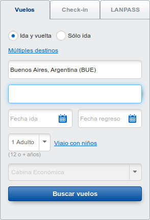

Una vez que el vuelo está reservado el usuario vé un menú con los pasos siguientes y ofertas compatibles con el destino que compró, la clase de la cabina, la duración del viaje, etc...
Rediseño de la interacción
Research
Este informe (no) está basado en el análisis la siguiente información:
- Registro de accesos al site ("logs"),
- Encuesta online,
- Entrevistas con usuarios, y
- Experiencia anterior.
Consideraciones
De la investigación de uso (no) realizada surge que los usuarios arriban al sitio web de LAN con alguno de los siguientes objetivos:
-
Investigar sobre la oferta de LAN (destinos, precios y horarios) y eventualmente comprar pasajes y otros productos
-
Efectuar reservas y pagarlas
-
Averiguar sobre el estado de los vuelos, para viajar o para ir al aeropuerto a recibir a alguien que está viajando
-
Hacer el check-in para un vuelo ya comprado
 Varios otros objetivos,
necesarios pero con audiencia mucho menor
Varios otros objetivos,
necesarios pero con audiencia mucho menor
Además se tiene en cuenta que:
- La Empresa tiene interés en que los usuarios realicen determinadas acciones, o tengan oportunidad de ver información o publicidad.
- De ninguna manera se puede mover de la página de inicio el artefacto de reserva de vuelos.
- Un mismo usuario entra al sitio con diversos objetivos pero en distintas ocasiones. Cada vez que entra lo más probable es que lo haga en pos de un único objetivo.
- Algunos usuarios tienen mucha práctica y dominan la operación del sitio, mientras que otros lo usan muy esporádicamente o no lo conocen.
- Algunos usuarios son hábiles para la operación de la Internet en general, mientras que otros tienen menos práctica y menos seguridad.
- Es oportuno considerar la incorporación de características de accesibilidad a la interfase del sitio, que se está transformando cada vez más en una exigencia.
- El sitio está organizado replicando la organización interna de la Empresa, que no refleja necesariamente la conveniencia del usuario.
Propuesta en general
esta es una propuesta para construír encima
Una primera versión del menú inicial. como para empezar a construír consenso, se compone de links a las áreas más frecuentemente accedidas por los usuarios mas alguna que sea de interés estratégico para la Empresa.
menú directo
La idea central es presentarle al usuario en la página de inicio un artefacto de navegación que llamaremos menú inicial, aunque tenga un aspecto diferente de lo que el término "menú" sugiere. Es una lista de opciones de navegación.
El menú puede ser navegado de manera simple por alguien con poca práctica, y rápidamente por los usuarios expertos, con una jerarquía de links que se despliegan oportunamente.
ofertas targeted
Mientras el usuario navega el sitio en pos de sus objetivos, queremos mostrarle información sobre la oferta de servicios complementarios que puede adquirir.
Un criterio es darle el usuario un camino directo a lo que quiere, y una vez que está allí mostrarle ofertas complementarias, dentro de lo posible relacionadas con su viaje. Por ejemplo si está buscando vuelos al Caribe no mostrarle publicidad de equipos para esquiar y medios de elevación.
Idealmente el sitio tendría un pool de ofertas, tagueadas con diversas caracteríasticas como la del ejemplo anterior: Bariloche asociado positivamente con medios de elevación y negativamente con tablas de surf.
Hay además una cantidad de otras propiedades que pueden determinar cuáles ofertas mostrar. Por ejemplo si el usuario busca vuelos de primera clase mostrarle hoteles de muchas estrellas y no hostels. O según la temporada: mostrar ofertas de servicios para esquiar cuando la fecha del vuelo cae en la temporada de esquí.
información general
La página de inicio, además del menú inicial, tiene espacio para alguna información genérica, como por ejemplo que LAN fué premiada nuevamente, o que hay un cambio de política que afecta a todos, ...
organizado para la satisfacción
Una persona que compra un viaje debe entrar a diversas secciones del sitio para realizar los distintos pasos necesarios.
Es similar a cuando, en una oficina pública antigua, uno debe pasar por diversas ventanillas para completar un trámite.
Por ejemplo hacer una reserva, pagarla, hacer el checkin, reservar lugar en el bus al aeropuerto, reservar hotel, comprar traslados en destino, solicitar upgrade.
La idea es proveer satisfactores para todas las necesidades del usuario en una misma sucesión, en vez de hacerle navegar el menú saliendo y volviendo a entrar por cada una de las "ventanillas" de la organización de LAN.
Menu pasajero
|  |

|
|